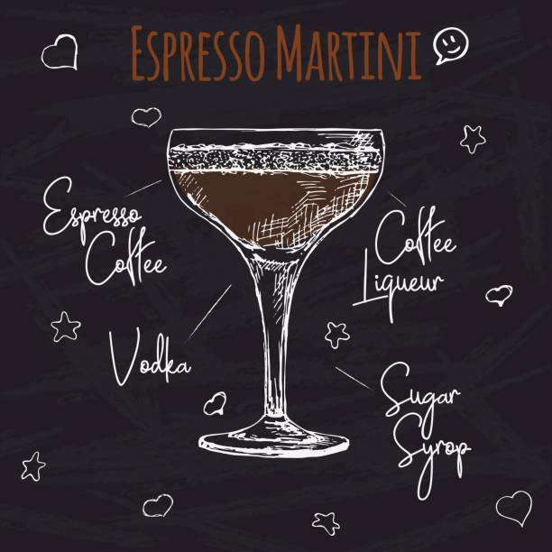

Espresso Martini

The espresso martini is a cold caffeinated alcoholic drink made with espresso, coffee liqueur, and vodka. It is not a true martini as it contains neither gin nor vermouth, but is one of many drinks that incorporate the term martini into their names
Igreadiants
- Espresso
- Coffee liqueur
- Vodka
- Sugar syrup
Steps
- Add ice in to the shaker
- Pour espresso, coffee liqueur and vodka in to the shaker with ice
- Shake it weal
- Pour your cocktail in to the martini glass
- Decorate it with 3 coffee beans
Dark 'N' Stormy
Negroni
back